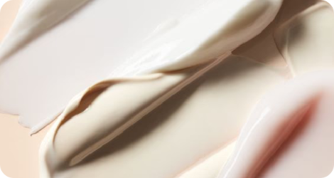
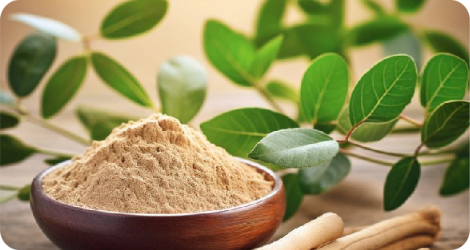
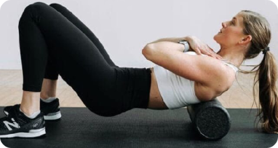

FEATURED BLOGS
Gut Health is the Real Glow-Up
A healthy gut influences your energy, skin, mood, and more. Learn how herbs, prebiotics, and mindful eating can transform your overall wellness.

5-Minute Mindfulness Rituals
Short on time? These micro-rituals—like breathwork, grounding, and aromatherapy—help you reset within minutes.

Skincare Without Synthetics
Learn about cruelty-free skincare and what ingredients to avoid in your daily products.

6 Natural Supplements You Should Know About
Support stress relief and digestion with Ashwagandha, Triphala, and more powerful herbs.

Your Fitness Routine Needs Recovery Rituals
Discover post-workout essentials like herbal balms, foam rolling, and magnesium baths.
How to Create a Holistic Self-Care Sunday
Use detox teas, journaling, and calming music for body-mind alignment every weekend.